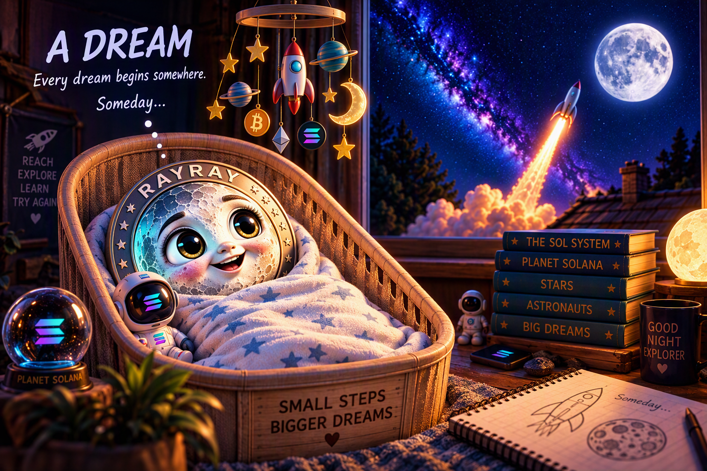
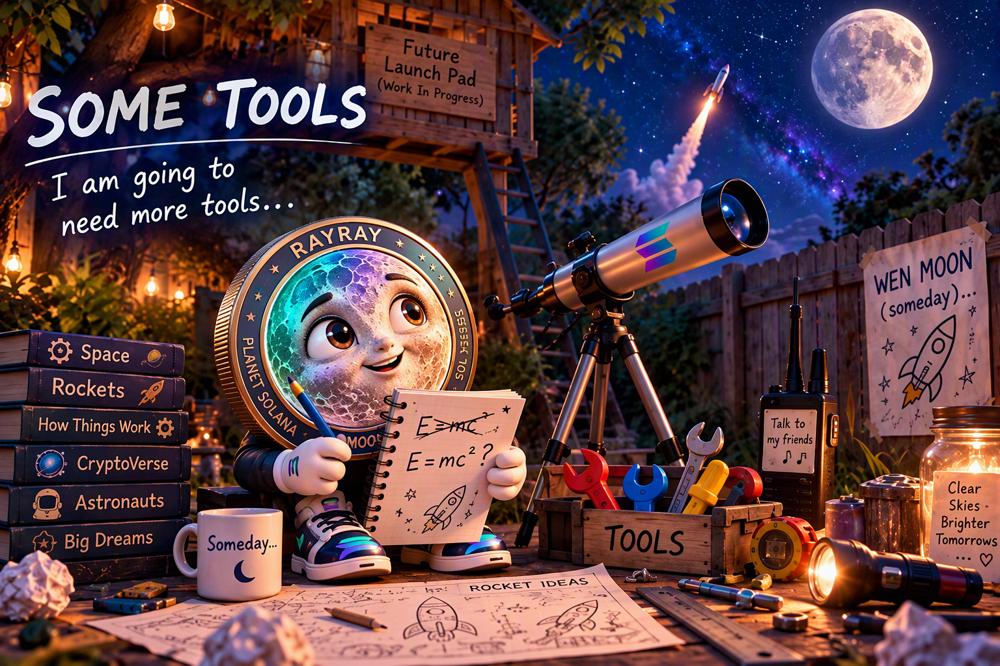
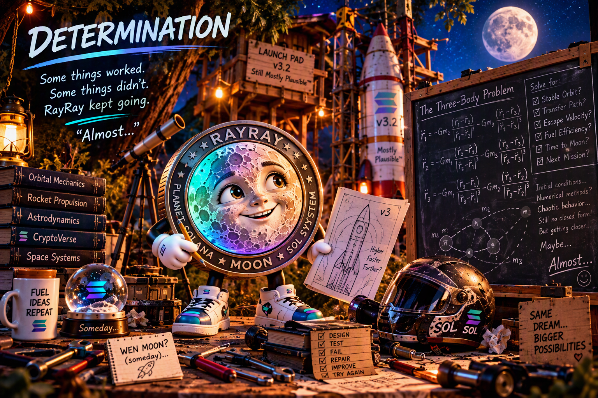
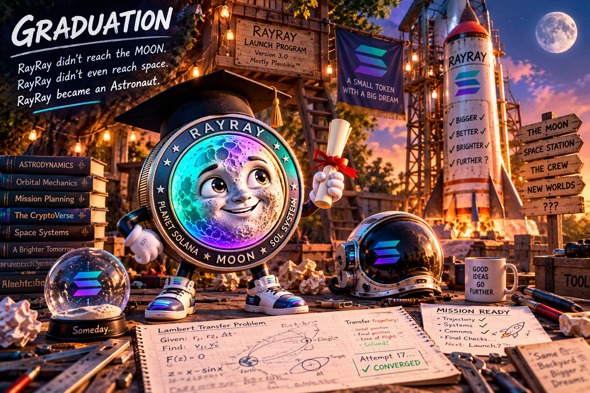
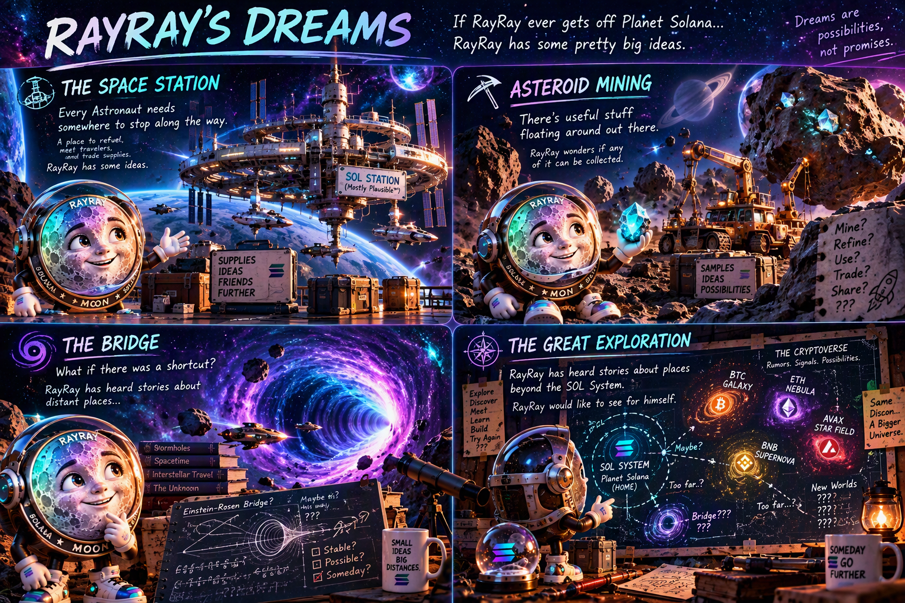

01 A Dream
RayRay is a small token, born under a Full Moon on Planet Solana of the SOL System.
Every dream begins somewhere.
“Someday...”
RayRay leaves little things behind for those who look closely.
A little token from Planet Solana
Meet RayRay.
Ray Moon is a little token from Planet Solana of the SOL System. RayRay dreams of becoming an Astronaut.
Everyone keeps asking: WEN MOON, RAY?
“Someday...”
[OFFICIAL MINT ADDRESS]
Follow the Journey: www.RayRayMoon.com
🚀 Visit RayRay’s BirthplaceA dream + some tools + questionable engineering + determination.

RayRay is a small token, born under a Full Moon on Planet Solana of the SOL System.
Every dream begins somewhere.
“Someday...”
RayRay leaves little things behind for those who look closely.

RayRay keeps looking up.
The rockets get there.
Figuring out how RayRay gets there too is going to take a little more work.
A telescope. A radio. A few books. Some drawings.
And some tools.
“I am going to need more tools...”

At some point, RayRay gets an idea.
If there isn’t a space program, RayRay will make one.
A tree fort becomes a launch pad.
Spare parts become a
rocket.
A bicycle helmet becomes... well, close enough
for now.
The application is still questionable.
Engineering Standard: Mostly Plausible™
WEN MOON, RAY?
“Someday...”

The dream hasn’t changed.
Almost everything else has.
The tools get better.
The math gets harder.
The
rockets get more complicated.
Some things work.
Some things don’t.
RayRay keeps going...
and going...
“Almost...”

The dream hasn’t changed.
But now, something has.
The work pays off.
The math finally works.
RayRay
earns Graduation.
RayRay hasn’t reached THE MOON yet.
RayRay hasn’t even reached space.
RayRay becomes an Astronaut.
Future stage Not yet reached
RayRay has earned the helmet.
The backyard suddenly feels a little too small.
For the first time, the question isn’t how an Astronaut gets to THE MOON.
Now there are even more questions.
How does RayRay get to THE MOON?
Where does RayRay go from here?
WEN MOON, RAY?
“Someday...”
Looking beyond the backyard
Over the years, RayRay has had many dreams about the CryptoVerse...
Strange places, distant worlds, wormholes to other systems, and wonders RayRay hasn’t discovered yet.
RayRay has some pretty big ideas.
Dreaming of what the future might bring...

Dreams are possibilities, not promises.
A clear view of today
Dreaming is easy.
Getting there is going to take a little more work.
Current project state
Pre-Launch
RayRay’s story only moves forward when RayRay does.
The adventure hasn’t started yet.
Why keep looking up?
RayRay has one big dream.
Become an Astronaut and, someday, find THE MOON.
Getting there won’t be easy.
RayRay will need friends.
RayRay will need tools.
RayRay
will make mistakes.
RayRay will learn.
And RayRay will
keep trying.
RayRay begins as one token on Planet Solana.
No guaranteed destination.
No promised future.
No
pretending that dreams have already been built.
If RayRay grows, RayRay’s world may grow too.
Maybe the Space Station remains a dream.
Maybe the asteroids
never get mined.
Maybe those strange places on RayRay’s
star map really are impossibly far away.
Or maybe...
“...you know what? That might actually work.”
RayRay’s story will only move forward when RayRay does.
A dream + some tools + questionable engineering + determination.
WEN MOON, RAY?
“Someday...”
The adventure is better together
RayRay has learned a lot along the way.
But exploring the CryptoVerse sounds like a lot more fun with friends.
After Graduation, Telegram may eventually become MISSION CONTROL. It isn’t active yet.